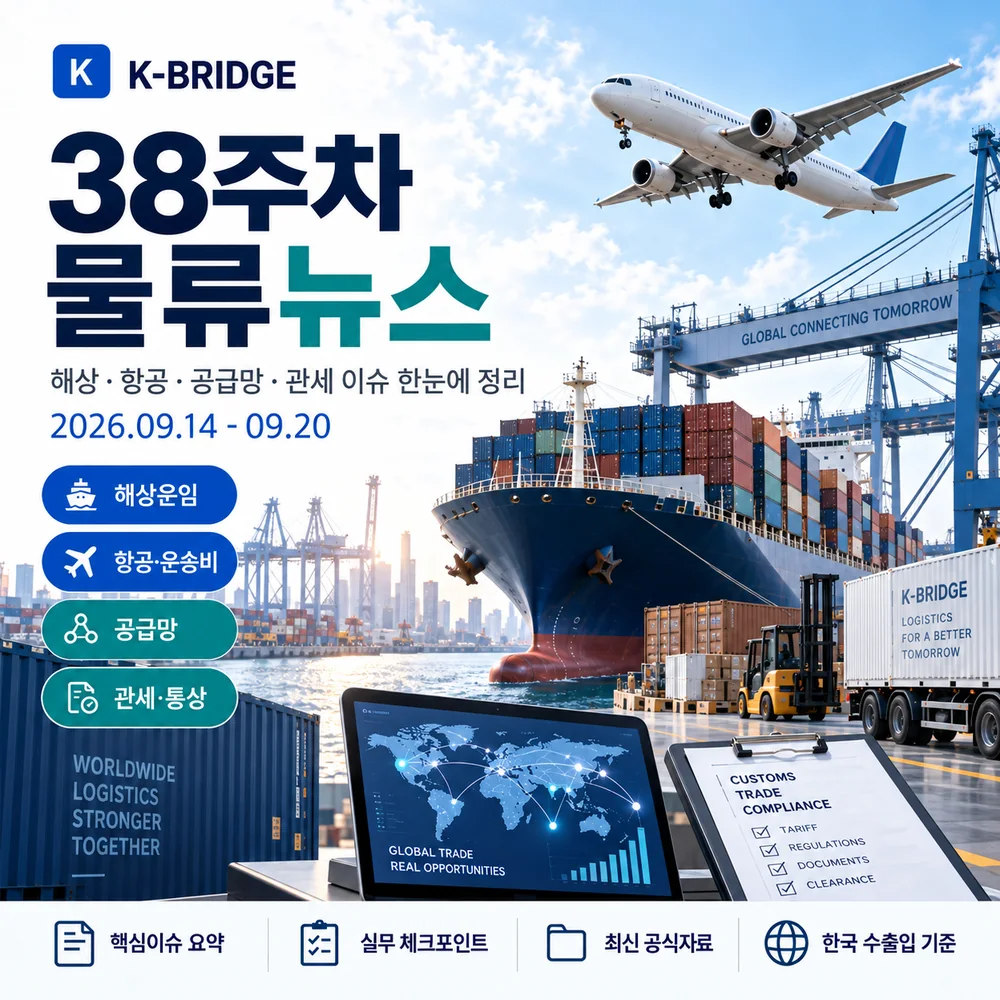
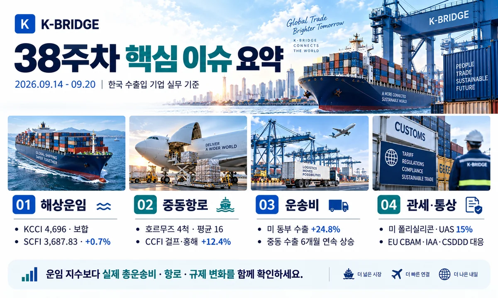
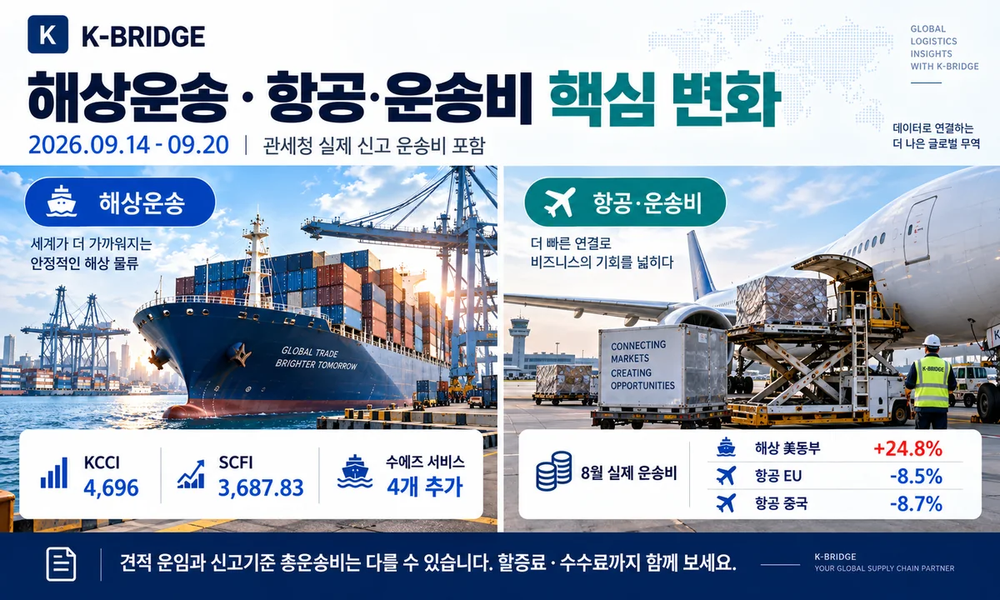
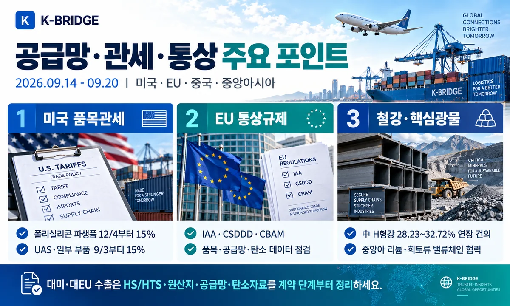
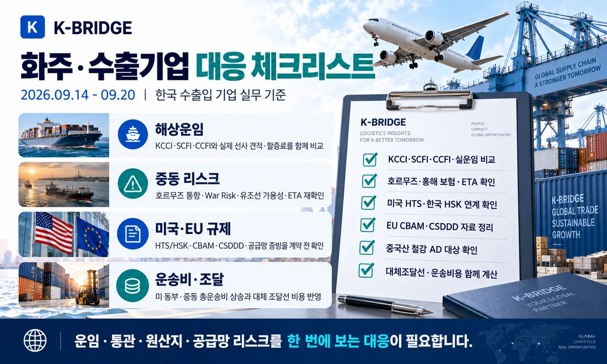

38주차 핵심 요약
KCCI는 4,696으로 보합권이었지만 SCFI는 3,687.83(+0.7%), CCFI는 1,897.15(+1.9%)로 상승했습니다. 특히 CCFI의 페르시아만·홍해 항로는 12.4% 뛰어 중동 리스크가 운임에 반영되고 있습니다. 호르무즈 가시 통항은 9월 17일 4척으로 최근 10일 평균 16척을 크게 밑돌았습니다. 국내에서는 8월 확정 수출이 983억달러(+68.7%)를 기록한 가운데, 실제 신고 운송비용은 미국 동부 해상수출이 전월 대비 24.8% 올랐습니다. 이번 주에는 미국 폴리실리콘·UAS 품목관세 연계표, EU IAA·CSDDD·CBAM, 중국산 H형강·봉강 반덤핑과 중앙아시아 핵심광물 공급망 협력이 주요 통상 이슈로 부상했습니다.

1. 38주차 시장 한눈에 보기
38주차는 전체 컨테이너 지수는 완만했지만 중동 항로와 실제 운송비용의 부담이 확대된 주간입니다. KCCI는 보합권이었으나 SCFI·CCFI는 상승했고, CCFI 페르시아만·홍해 항로는 12.4% 급등했습니다. 호르무즈와 홍해의 운항 불확실성, 미국·EU의 규제 변화까지 겹쳐 단순 운임보다 실제 항로와 품목 규정을 함께 확인해야 합니다.
| 지표 | 38주차 기준 | 변화 | 실무 해석 |
|---|---|---|---|
| KCCI | 4,696 | 9/14 · -0.02% | 전체 보합, 미주 상승·유럽/지중해 하락 |
| SCFI | 3,687.83 | 9/18 · +0.7% | 상하이발 스팟운임 완만한 상승 |
| CCFI | 1,897.15 | 9/18 · +1.9% | 걸프·홍해 +12.4%, 한국항로 +3.4% |
| 호르무즈 | 4척 | 9/17 · 평균 16척 | 유조선·에너지화물 통항 변동성 지속 |
| 8월 수출 | 983억달러 | +68.7% | 반도체 468억달러, 무역흑자 348억달러 |
| 美동부 해상수출비 | 9,973천원 | 8월 · +24.8% | 40ft 기준 총운송비 부담 확대 |
2. 해상운송·글로벌 항로
KCCI 4,696 - 전체 보합, 항로별 방향은 엇갈림
한국해양진흥공사 기준 9월 14일 KCCI는 4,696으로 전주 4,697과 사실상 같은 수준이었습니다. 미주 서안은 7,485(+0.8%), 미주 동안은 11,019(+0.3%), 중동은 8,767(+1.2%), 호주는 4,649(+1.5%), 중남미 동안은 8,770(+3.0%)으로 상승했습니다. 반면 유럽은 4,187(-2.4%), 지중해는 4,632(-3.9%), 중남미 서안은 6,862(-2.8%)로 하락했습니다.
SCFI 3,687.83 · CCFI 1,897.15 - 중동·홍해 항로 급등
상하이해운거래소의 9월 18일 SCFI는 3,687.83으로 전주 대비 약 0.7% 올랐고, CCFI는 1,897.15(+1.9%)를 기록했습니다. CCFI 세부 항로에서는 페르시아만·홍해가 12.4%, 한국항로가 3.4%, 동남아가 3.6% 상승했습니다. 반면 유럽은 -1.1%, 지중해는 -1.3%로 약세였습니다.
호르무즈 가시 통항 4척 - 최근 10일 평균 16척 하회
Reuters가 Kpler 자료를 인용한 9월 18일 보도에 따르면 전날 호르무즈 해협을 통과한 가시 상품선은 4척으로 최근 10일 평균 16척보다 크게 적었습니다. 일부 선박은 AIS를 끈 채 통과할 수 있어 실제 물동량 집계에는 불확실성이 있지만, 선박 가용성과 보험·운임 리스크가 계속 높다는 점은 분명합니다.
사우디 원유, 오만 Sohar 환적 확대 - 한국 등 아시아 공급 보완
Reuters는 사우디 아람코가 9~10월 약 6천만 배럴을 걸프의 Ras Tanura에서 오만 Sohar로 옮겨 선박간 환적 방식으로 수출할 계획이라고 보도했습니다. 주요 구매국에는 한국·중국·인도·일본이 포함됩니다. Yanbu향 동서송유관 차질을 보완하는 조치지만, 초대형 유조선 운임이 높은 수준이라 한국 정유·석화 업계에는 운송비 부담이 남습니다.
Maersk·Hapag-Lloyd, 수에즈 경유 서비스 4개 추가
양사는 AE5, AE11, AE12, ME2 등 4개 공동 서비스를 수에즈운하로 추가 복귀시키기로 했습니다. 희망봉 우회보다 운송시간을 줄일 수 있지만, 중동·홍해 안전상황에 따라 운영계획이 다시 바뀔 수 있습니다. 유럽향 화주는 선사명만 보지 말고 실제 서비스 코드와 선박별 로테이션을 확인해야 합니다.
한국 원유 수급 - 9~10월 전년 대비 90% 이상 확보
산업통상부는 9월 14일 정유·해운업계와 원유 수급을 긴급 점검했습니다. 업계는 7~8월 도입 원유를 전년 대비 100% 이상 확보했고 9~10월도 90% 이상 확보해 단기 수급 영향은 제한적이라고 밝혔습니다. 정부는 사우디 송유관과 수에즈 등 우회항로를 모니터링하고 비축유 SWAP, 다변화 운임차액 지원 확대를 검토하고 있습니다.

3. 한국 수출입·실제 운송비
8월 수출 확정 983억달러 - 반도체 468억달러 역대 최대
관세청 확정치에서 8월 수출은 983억달러(+68.7%), 수입은 635억달러(+22.4%), 무역수지는 348억달러 흑자를 기록했습니다. 반도체 수출은 468억달러(+206.1%)로 역대 최대였지만 수출 중량은 9.8% 감소했습니다. 물량보다 고부가가치 제품 비중이 커진 만큼 항공·긴급운송 수요와 보안·취급 조건을 함께 볼 필요가 있습니다.
8월 해상 수출 총운송비 - 미국 동부 +24.8%, 중동 6개월 연속 상승
관세청 신고자료 기준 40ft 컨테이너 1개(2TEU)당 평균 해상수출 운송비는 미국 서부 858만9천원(+0.5%), 미국 동부 997만3천원(+24.8%), 중동 883만8천원(+1.7%)으로 올랐습니다. 중동은 2월 이후 6개월 연속 상승했습니다. 반면 유럽연합은 -9.4%, 중국 -22.4%, 베트남 -9.0%로 하락했습니다.
항공 수입 운송비 - 미국·일본 상승, EU·중동·중국·베트남 하락
8월 항공수입 화물의 kg당 평균 운송비는 미국 4,999원(+0.8%), 일본 2,134원(+1.9%)으로 상승했습니다. 유럽연합은 6,309원(-8.5%), 중동 7,111원(-1.9%), 중국 3,365원(-8.7%), 베트남 4,991원(-12.1%)으로 하락했습니다. 항공시장은 노선별 방향이 크게 달라 평균값보다 실제 Origin과 서비스 레벨을 기준으로 비교해야 합니다.
운임지수와 실제 신고 운송비가 다른 이유
KCCI·SCFI는 시장의 컨테이너 운임 방향을 보여주는 지수인 반면, 관세청 운송비 통계는 실제 신고 건의 운임·할증료·수수료 등을 포함한 평균 총운송비입니다. 계약시점·선사·서비스·할증료·Free Time·현지비용이 다르기 때문에 견적 검토 시 지수와 실제 All-in 비용을 구분하는 것이 중요합니다.

4. 공급망·관세·통상
미국 폴리실리콘·UAS - HTS와 HSK 10단위 연계표 공개
관세청은 9월 16일 미국이 추가 발표한 폴리실리콘 및 파생제품, 무인항공시스템(UAS)·부품에 대한 미국 HTS와 한국 HSK 10단위 연계표를 공개했습니다. 한국산 폴리실리콘 파생제품은 12월 4일부터 15%, 무인기·도킹스테이션과 일부 부품은 9월 3일부터 15% 관세가 적용됩니다. 기타 일부 무인기 부품은 2027년 2월 9일부터 적용됩니다.
EU IAA·CSDDD·CBAM - 공급망·탄소자료 사전 준비 필요
산업통상부는 9월 16~18일 EU 집행위와 산업가속화법(IAA), 기업 지속가능성 실사지침(CSDDD), 탄소국경조정제도(CBAM) 등 주요 규제를 협의했습니다. EU향 수출기업은 단순 통관서류를 넘어 생산지·조달처·탄소배출량·공급망 실사자료를 장기적으로 관리해야 합니다.
중국산 H형강·봉강 - 반덤핑 조치 확대
무역위원회는 중국산 H형강에 기존 28.23~32.72% 덤핑방지관세와 가격약속을 향후 5년간 연장하도록 건의했습니다. 중국산 봉강은 예비 긍정판정과 함께 25.08~27.96% 잠정덤핑방지관세 부과를 건의했습니다. 철강·중장비·조선 부품 수입기업은 품목범위와 공급자별 적용조건을 계약 전에 확인해야 합니다.
한-중앙아 C5+1 - 리튬·희토류 공급망 협력 확대
한국과 중앙아시아 5개국은 첫 C5+1 산업장관회의를 열고 산업·인프라, 핵심광물·에너지, 제조 AI 분야의 협력을 강화하기로 했습니다. 리튬·희토류는 단순 원광 수입을 넘어 현지 정·제련, 소재 가공, 완제품 생산까지 이어지는 밸류체인 협력을 추진합니다.
관세 품목분류 - 제조공정·결속방법·제품특성까지 확인
관세청은 9월 14일 제5회 품목분류위원회 결과를 공개하며 원재료와 외관이 유사한 제품도 제조공정과 결속방법, 최종 제품의 특성에 따라 다른 품목번호로 분류될 수 있다고 안내했습니다. 첨단장비·유리섬유 등 복합제품은 수출입신고 전 품목분류 사전심사를 활용하면 세율·규제 오적용 위험을 줄일 수 있습니다.
석유 최고가격 동결 - 국내 내륙운송 비용의 단기 상단 제한
정부는 중동정세 불안을 고려해 9월 19일부터 4주간 휘발유 1,784원/L, 경유 1,773원/L, 등유 1,380원/L의 10차 석유 최고가격을 기존 수준으로 동결했습니다. 국제유가와 중동 운송 리스크는 여전히 높지만, 국내 트럭·육상운송 비용에는 단기적으로 급격한 연료비 상승을 완충하는 요인이 될 수 있습니다.

5. 화주·수출기업 대응 체크리스트
- 해상: KCCI·SCFI·CCFI와 실제 선사 All-in 견적을 함께 비교합니다.
- 중동: 호르무즈·홍해는 War Risk, 선박 가용성, 환적항, ETA 버퍼를 항차별로 확인합니다.
- 수에즈: 복귀 서비스가 늘고 있지만 선사·서비스 코드·실제 선박 로테이션을 확인합니다.
- 운송비: 미국 동부·중동은 신고 기준 총운송비 상승을 견적과 예산에 반영합니다.
- 미국: 폴리실리콘·UAS는 관세청 HTS-HSK 연계표로 대상 품목과 적용시점을 확인합니다.
- EU: IAA·CSDDD·CBAM 대응을 위해 공급망·원산지·탄소 데이터를 계약 단계부터 정리합니다.
- 철강: 중국산 H형강·봉강의 AD 대상 범위와 공급자별 세율을 수입 전 확인합니다.
- 공급망: 중앙아시아 등 대체 핵심광물 공급선은 운송루트·정제국·원산지까지 함께 검토합니다.
6. 자주 묻는 질문
Q. 2026년 38주차 KCCI는 얼마인가요?
Q. 호르무즈 해협이 폐쇄된 상태인가요?
Q. 미국 폴리실리콘·드론 관세 대상 여부는 어떻게 확인하나요?
Q. 운임지수가 보합인데 실제 비용은 왜 오를 수 있나요?
38주차는 '지수'보다 실제 항로와 총운송비 확인이 중요합니다
케이브릿지는 해상·항공·통관·국내운송을 연결해 운임뿐 아니라 호르무즈·수에즈 리스크, 실제 운송비, 미국·EU 품목규제와 원산지 조건까지 함께 검토합니다.